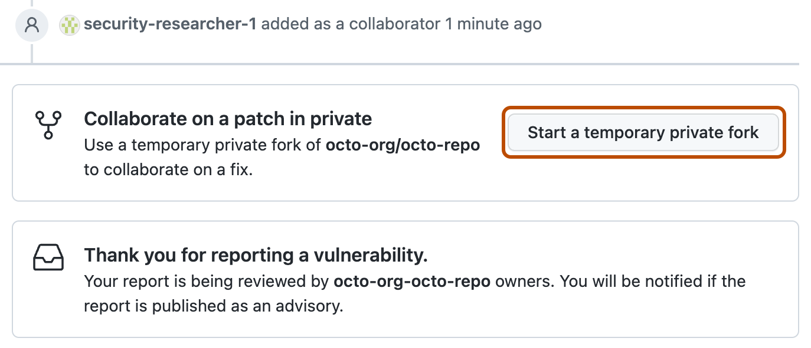

Some public repositories configure security advisories so that anyone can report security vulnerabilities directly and privately to the maintainers.
Owners and administrators of public repositories can enable private vulnerability reporting on their repositories. See Configuring private vulnerability reporting for a repository.
Note
SECURITY.md file. You can only report vulnerabilities privately for repositories where this feature is enabled, and you don’t need to follow the instructions in SECURITY.md.If a public repository has private vulnerability reporting enabled, anyone can submit a private vulnerability report to the repository maintainers.
If the repository doesn't have private vulnerability reporting enabled, you need to initiate the reporting process by following the instructions in the security policy for the repository, or by creating an issue asking the maintainers for a preferred security contact. See About coordinated disclosure of security vulnerabilities.
On GitHub, navigate to the main page of the repository.
Under the repository name, click the Security and quality tab. If you cannot see the " Security and quality" tab, select the dropdown menu, and then click Security and quality.
Click Report a vulnerability to open the advisory form.
Fill in the advisory details form.
Tip
In this form, only the title and description are mandatory. (In the general draft security advisory form, which the repository maintainer initiates, specifying the ecosystem is also required.) However, we recommend security researchers provide as much information as possible on the form so that the maintainers can make an informed decision about the submitted report. You can adopt the template used by our security researchers from the GitHub Security Lab, which is available on the github/securitylab repository.
For more information about the fields available and guidance on filling in the form, see Creating a repository security advisory and Best practices for writing repository security advisories.
At the bottom of the form, click Submit report. GitHub will display a message letting you know that maintainers have been notified and that you have a pending credit for this security advisory.
Tip
When the report is submitted, GitHub automatically adds the reporter of the vulnerability as a collaborator and as a credited user on the proposed advisory.
Optionally, click Start a temporary private fork if you want to start to fix the issue. Note that only the repository maintainer can merge changes from that private fork into the parent repository.

The next steps depend on the action taken by the repository maintainer. See Managing privately reported security vulnerabilities.